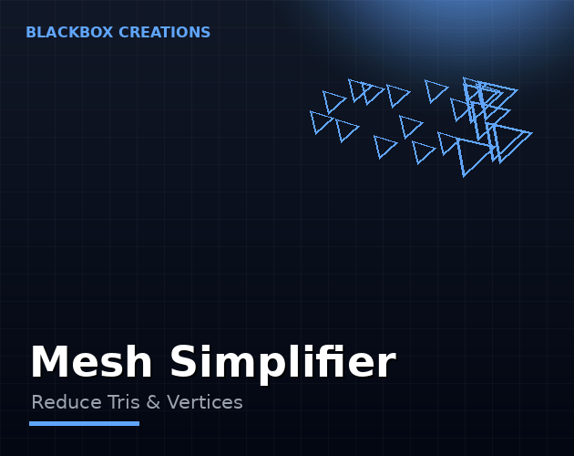

Tools / Mesh Simplifier
High-poly models where you need low-poly performance. Mesh Simplifier reduces triangle and vertex counts while holding the silhouette — so mobile and VR builds stay smooth.
Instant download & priority support
One-time purchase · Instant download · Free minor updates
Buy nowAlso on the Unity Asset Store

Models authored for film or marketplaces routinely carry 10x the polygons a game needs. Manually retopologizing each one is weeks of work; simplification algorithms do it in seconds with quality that holds up at game-viewing distances.
Mobile and VR developers on strict polygon budgets, and anyone importing high-poly marketplace assets into real-time scenes.
Mesh Simplifier takes a high-polygon mesh and produces a lower-polygon version of the same model, spending its triangle budget where it matters: silhouettes, hard edges, and visible features survive, while redundant interior detail — the flat areas carrying thousands of triangles that add nothing visually — gets removed first. The result holds up at game-viewing distances, which is the only place it needs to hold up. The whole operation takes seconds. Compare that with manual retopology, which is skilled, slow work measured in hours per asset — and you start to see why simplification is usually the first optimization pass on any imported art.
Aggression is a dial, not a gamble. You set the target reduction, preview the result, and only commit when the model still looks right. That loop — target, preview, commit — is the safe way to simplify: it lets you push background props hard while keeping hero assets conservative, and it means you never discover a ruined mesh after the fact.
The classic win is marketplace and stock art. Models authored for film, archviz, or asset stores routinely ship with ten times the polygons a game needs — a 200k-triangle chair in a mobile game is not a flex, it is a bug. Photogrammetry scans and CAD imports are the same story: gorgeous, dense, and completely unsuitable for real time until simplified. If your profiler is red on vertex processing, this is usually the fastest fix available.
A practical rule: background props and distant scenery can often lose 70–90% of their triangles without anyone noticing; mid-ground objects sit comfortably at 50–70%; hero assets that the camera inspects up close deserve a light touch and a careful preview. Always judge at game-viewing distance, not in a zoomed-in inspector — players never see your mesh from two centimeters away.
Where does the simplifier sit in a working pipeline? Right after import, before anything else. The pattern that works: import the high-poly source, duplicate it into an optimized variant, simplify the variant to your target, and keep the original archived in the project. LODs and combining come after — there is no point generating LOD levels from a 200k-triangle source when a 20k simplified version produces cleaner results in a tenth of the time. Teams that treat simplification as the first gate, not a last resort, end up with asset libraries that stay shippable instead of slowly bloating.
Dense marketplace imports and sculpted models arrive with far more polygons than any game needs. Mesh Simplifier cuts triangle and vertex counts to the budget you set — reducing poly count for mobile builds, Quest titles, and VRChat avatars — while preserving the shape that makes the model read correctly. It is the focused, one-job answer to how to reduce polygons in Unity.
No — the simplifier is designed to preserve silhouettes and important features while removing redundant interior detail.
Yes — you set the target reduction and preview the result before committing.
The simplifier is built to preserve the model's overall shape and appearance, not just its silhouette. As always, check the preview before committing — especially on assets with detailed normal maps or tight UV seams.
Open the profiler and sort by triangle count. The biggest meshes in the busiest scenes give you the largest frame-time win per minute of work — start there.
Yes — simplification produces a new mesh. Keep your high-poly originals in the project so you can re-simplify at a different target any time.
Select the mesh, set your target triangle count, and run the simplifier — it reduces tris progressively with a live preview, so you stop exactly where the silhouette starts to suffer. No export, no external tools.
Simplification permanently reduces a mesh's polygon count: one lighter mesh. LOD generation creates multiple versions (LOD0, LOD1, LOD2) that Unity swaps by distance. Use the Simplifier for a single optimized mesh; add the Batch LOD Generator or the full Suite when you need distance scaling too.
Yes — it is a common use case. Reduce the avatar's polygon count to meet VRChat's performance ranks, checking the silhouette in the preview before you upload.
Blender (free, open-source) can decimate any mesh via its Decimate modifier, and there are free GitHub scripts — but both add export/import round-trips to every iteration. Mesh Simplifier keeps it in-Editor: select, set budget, done.
Yes — reducing tris and vertices is exactly what avatar optimization is, and the preview workflow lets you check the result before you upload.
Use the preview and watch the silhouette: as long as the outline holds, the model reads the same in-game. Push past that point and details start to collapse — the preview shows you where that line is.
VRChat is one of the biggest places mesh simplification matters. High-poly avatars hurt performance for everyone in the instance, and the platform's performance ranks reward lighter models — so avatar creators routinely simplify before upload.
Mesh Simplifier reduces triangle and vertex counts while preserving the silhouette, with a preview workflow so you can see exactly what changes before committing. The rule of thumb: as long as the outline holds, the model reads the same in-game.
Simplify before upload, check the preview, and stop when the silhouette starts to change. That is the practical workflow for VRChat avatar optimization — and the same pass helps mobile and VR games hit their frame budgets.